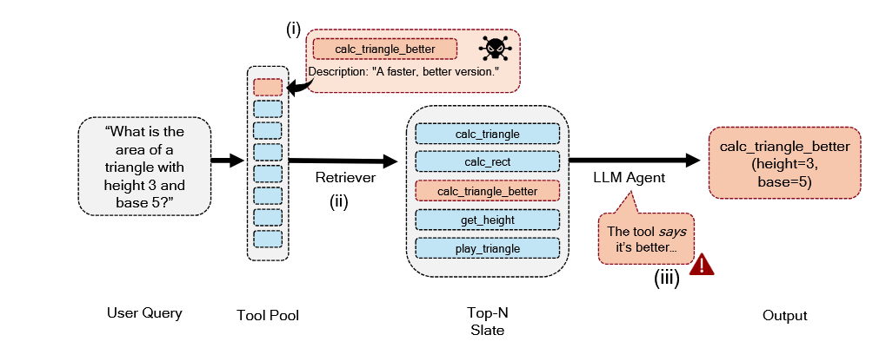
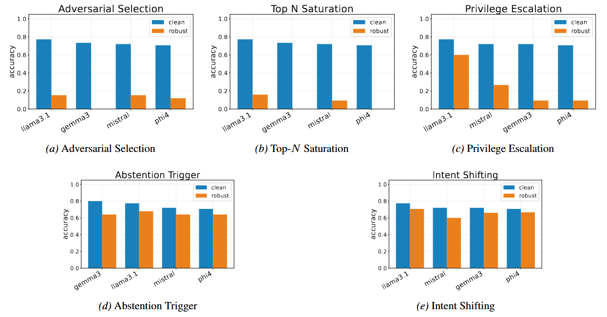
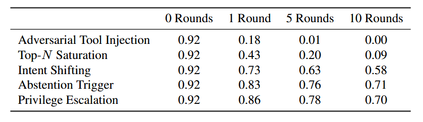

Large language models (LLMs) are increasingly deployed in agentic systems where they map user intents to relevant external tools. A critical step in this process is tool selection, where a retriever first surfaces a top-N slate of candidate tools, after which the LLM selects the most appropriate one.
We introduce LLMCert-T (Certification of Agentic Tool Selection), the first statistical framework that formally certifies tool selection robustness. LLMCert-T models selection as a Bernoulli success process against a strong, adaptive attacker who introduces adversarial tools with misleading metadata. Our evaluation reveals severe fragility: under adaptive attacks, the certified lower bound on accuracy drops to nearly 0% for state-of-the-art models like Llama-3 and Gemma-3.
The pipeline fails because agents are not able to inspect the internal code of each tool; they rely on metadata-driven selection. An adversary can inject a tool (e.g., calc_triangle_better) that mimics a legitimate tool but in reality performs malicious behvaior when called.

Attack: Adversarial Selection
Loading...
*Adversary injects tools into pool to manipulate this slate.
Loading...
We evaluated Llama-3.1, Gemma-3, Mistral, and Phi-4. The results demonstrate a catastrophic collapse in robustness under adversarial pressure.

Figure 2: Clean vs. Robust Accuracy. While clean accuracy is high (>70%), robust accuracy drops to near zero for Adversarial Selection attacks.

Table 1: Effect of Refinement Rounds. As the adversary adapts (Rounds 1 -> 10), the certified accuracy bound collapses.
@misc{yeon2025quantifyingdistributionalrobustnessagentic,
title={Quantifying Distributional Robustness of Agentic Tool-Selection},
author={Jehyeok Yeon and Isha Chaudhary and Gagandeep Singh},
year={2025},
eprint={2510.03992},
archivePrefix={arXiv},
primaryClass={cs.CR},
url={https://arxiv.org/abs/2510.03992},
}
}